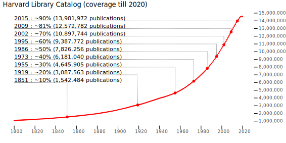
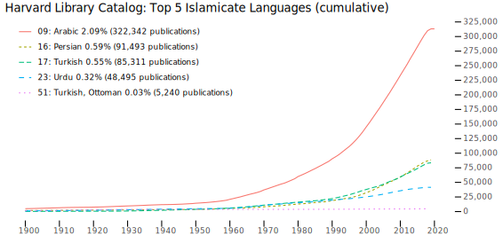
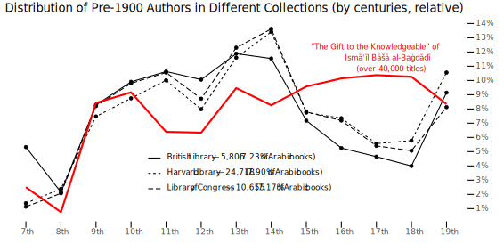
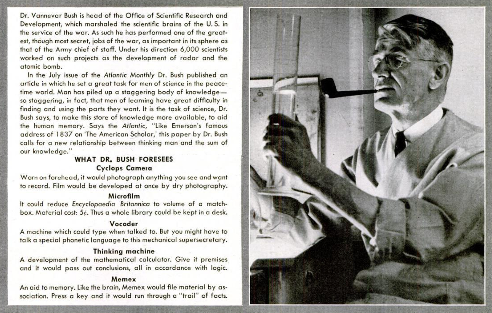
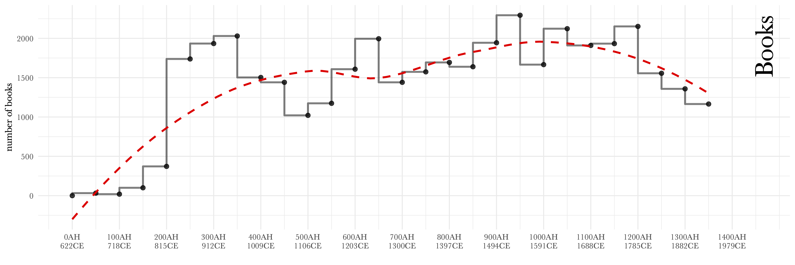
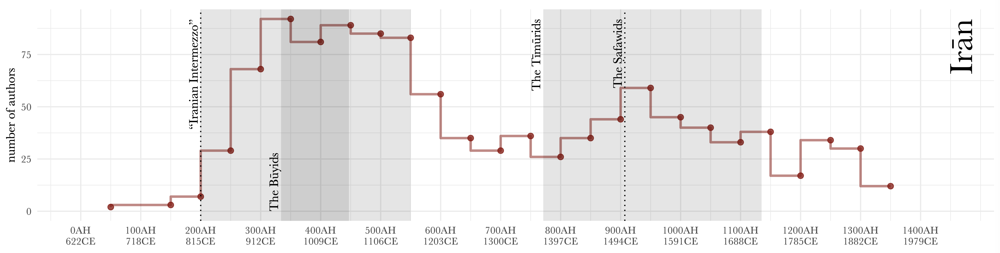
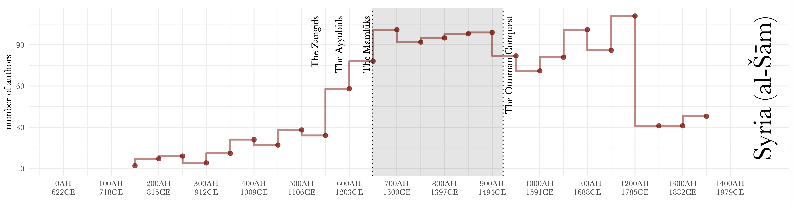
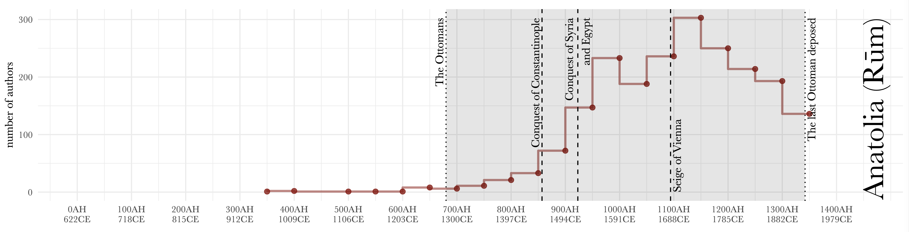

background-image: url(./images/bg_default_2021.png) background-size: contain class: center, middle # *Перспективы арабистики<br> в свете цифровой<br> гуманистики* ⥈ **Максим Романов** *доцент цифровой гуманистики*, Исторический факультет, Венский университет<br> *старший научный сотрудник*, KITAB Project, Университет Ага Хана (Лондон) ⥈ 11 мая 2021 ??? - разместить презентацию онлайн? --- background-image: url(./images/bg_default_2021.png) background-size: contain class: center, middle # Общий план ⥈ ## 1. Что такое ЦГ? ## 2. Давление «цифрового поворота» ## 3. Смысл ЦГ: создание сетей новых знаний ## 4. Примеры сетей ⥈ --- background-image: url(./images/bg_default_2021.png) background-size: contain class: center, middle # 1. Что такое ЦГ? ## Humanities Computing (1980s) ## Digital Humanities (2000s) --- class: center, middle # 1. Что такое ЦГ? ## Digital Humanities ### *цифровые гуманитарные науки*? ### *цифровые методы в гуманитарных науках*? ### *цифровая гумани[тари]стика*?<br> --- class: center, middle # 1. Что такое ЦГ? ## Digital Humanities ### ~~*цифровые гуманитарные науки*?~~ ### *цифровые методы в гуманитарных науках*? ### *цифровая гумани[тари]стика*?<br> --- class: center, middle # 1. Что такое ЦГ? ## Digital Humanities ### ~~*цифровые гуманитарные науки*?~~ ### ~~*цифровые методы в гуманитарных науках*?~~ ### *цифровая гумани[тари]стика*? --- background-image: url(./images/hse_dh.png) background-size: contain class: center, middle --- class: center, middle # 1. Что такое ЦГ? ## Digital Humanities ### *цифровая гумани[тари]стика*? --- class: center, middle # 1. Что такое ЦГ? ## Digital Humanities ### *цифровая гуманистика* По вольной аналогии с «гуманизмом эпохи Возрождения»: люди не имеют ограничений в их способности саморазвиваться и им стоит принимать все знания и развивать свои способности настолько, насколько это в принципе возможно. --- class: center, middle # 1. Что такое ЦГ? ## Digital Humanities: *цифровая гуманистика* ### Цифровой гуманист = *человек эпохи Возрождения* #### редактор, издатель, историк, математик,<br> философ, лингвист, эксперементатор, менеджер,<br> литературовед, автор, дизайнер, создатель,<br>*инженер* --- class: center, middle # 1. Что такое ЦГ? ## Digital Humanities: *цифровая гуманистика* ### Цифровой гуманист = *человек эпохи Возрождения* #### редактор, издатель, историк, математик,<br> философ, лингвист, эксперементатор, менеджер,<br> литературовед, автор, дизайнер, создатель,<br>.red[*инженер*] --- class: center, middle ## <http://whatisdigitalhumanities.com/> ## более 800 определений ??? - responses to the questions "What is DH? How do you define DH?" --- background-image: url(./images/dh_def_andrews1.png) background-size: contain class: center, middle --- background-image: url(./images/dh_def_andrews2.png) background-size: contain class: center, middle --- background-image: url(./images/dh_def_andrews3.png) background-size: contain class: center, middle --- background-image: url(./images/dh_def_cayless.png) background-size: contain class: center, middle --- background-image: url(./images/dh_def_cohen.png) background-size: contain class: center, middle --- background-image: url(./images/dh_def_flanders.png) background-size: contain class: center, middle --- background-image: url(./images/dh_def_french.png) background-size: contain class: center, middle --- background-image: url(./images/dh_def_jockers.png) background-size: contain class: center, middle --- background-image: url(./images/dh_def_jovanovic.png) background-size: contain class: center, middle --- background-image: url(./images/dh_def_mccarty.png) background-size: contain class: center, middle --- background-image: url(./images/dh_def_meeks.png) background-size: contain class: center, middle --- background-image: url(./images/dh_def_ramsay.png) background-size: contain class: center, middle --- background-image: url(./images/dh_def_rockwell.png) background-size: contain class: center, middle --- background-image: url(./images/dh_def_siemens.png) background-size: contain class: center, middle --- background-image: url(./images/dh_def_taylor.png) background-size: contain class: center, middle --- background-image: url(./images/dh_def_terras.png) background-size: contain class: center, middle --- background-image: url(./images/dh_def_vogeler.png) background-size: contain class: center, middle --- background-image: url(./images/dh_def_brumfield.png) background-size: contain class: center, middle --- class: middle exclude:false ## The Categories (and some observations) .red.bold[\*] - `[55]` variation on “the application of technology to humanities work”; - `[22]` working with digital media or a digital environment; - `[15]` minimize the difference between DH and humanities; - `[12]` umbrella or blanket nature of DH label; issues that humanists now face; - `[12]` using digital AND studying digital; - `[12]` refusals to define the term; - `[09]` method AND community; - `[09]` digitization/archives studying the digital; .footnote[.red[\*] Fred Gibbs, <i>Digital Humanities Definitions by type</i> (in Melissa Terras <i>et al.</i> (ed.)<br> <i>Defining Digital Humanities: A Reader</i>, 2013)] ??? Книга переведена на русский, но в переводе, к сожалению, много опущений и неточностей. --- class: middle exclude:false ## В определениях подчеркивается: .red.bold[\*] - `[55]` «применение технологий в гуманитарных исследованиях»; - `[22]` работа с цифровыми носителями или же в цифровой среде; - `[15]` отрицание различий между ЦГ и Г; - `[12]` широта понятия ЦГ; а также сложности, с которыми сталкиваются гуманитарные науки (имеется ввиду уменьшение количества студентов и финансирования в университетах); - `[12]` использование цифрового и изучение цифрового; - `[12]` отказ давать определение ЦГ; - `[09]` метод и сообщество; - `[09]` оцифровка/архивы; .footnote[.red[\*] Fred Gibbs, <i>Digital Humanities Definitions by type</i> (in Melissa Terras <i>et al.</i> (ed.)<br> <i>Defining Digital Humanities: A Reader</i>, 2013)] ??? Книга переведена на русский, но в переводе, к сожалению, много опущений и неточностей. --- class: middle exclude: true ## Категории и их частотность - `[55]` – использование технологий в гуманитарных науках; - `[22]` – работа с цифровыми технологиями; - `[15]` – минимизация различий между DH и гуманитарными науками; - `[12]` – широта понятия DH и проблемы гуманитарного дискурса; - `[12]` – отказы давать определение; - `[10]` – метод и сообщество; - `[09]` – оцифровка/архивы; - `[09]` – изучение цифровой среды. --- class: middle exclude: false Defining *digital humanities* is a tricky. Despite dozens of books that have this term in their titles, a newcomer will inevitably sense a certain lack of the unified vision of what this venture is. With countless definitions (or, perhaps better, propositions) of what digital humanities is, one has to either side with someone’s vision or to come up with one’s own. Yet, there are core ideas behind this multiplicity of forms. .center[⥈ ⥈ ⥈] Дать определение ЦГ действительно сложно. Несмотря на множество книг, в названии которых фигурирует эта фраза, новичку неизбежно бросится в глаза отсутствие единого видения. Утопая в сотнях определений ЦГ, каждый новоприбывший должен либо принять чье-то видение, либо предложить свое собственное. Тем не менее, за бесконечным многообразием манифестаций можно разглядеть и ключевые идеи. --- class: middle exclude: false A rather common way to define digital humanities is to provide some reflection on what one does. Despite seeming differences, this largely means that scholars of different humanities disciplines are attempting to solve research problems relevant to their fields by means of new technological advances. And these activities fall, roughly, into three major domains. .center[⥈ ⥈ ⥈] Наиболее частое определение ЦГ — это некая рефлексия о своей основной деятельности. И здесь, не смотря на кажущиеся разногласия, можно вычленить общий знаменатель: цифровые гумантарии стараются разрешить исследовательские проблемы, которые актуальны для их дисциплин; и делают они это путем привлечения новейших технических средств. Такого рода деятельность можно разделить на три условные категории. --- class: middle, center # 3 Domains of DH --- class: exclude: false ## 1. Digital Avatars of Material Objects - **Goals and Results**: - individual machine-readable digital avatars (micro- and meso- levels) of physical objects such as manuscripts, printed books, paintings, photographs, etc. - **Main tasks**: - description models for materials objects - developments and curation of relevant formats (TEI XML, mARkdown, etc.) - development of digitization procedures (OCR, transcription, scanning, etc.) - tagging, formatting, annotation, and general curation - **Methods**: - “engineering” (i.e., not analytical) - **Non-DH Equivalent**: - editing; - typesetting; - publishing; - promoting. --- class: exclude: false ## 2. Digital Meta Objects - **Goals and Results**: - complex machine-readable digital objects (databases, corpora, and other LOD .red[(1)] objects) as representations of complex phenomena .red[(2)]. - **Main tasks**: - bringing digital avatars (micro- and meso- objects) together into complex interconnected entities; - development, organization and curation of these objects; - design of complex workflows; - organizing and maintaining collaborations; - development and improvement of metadata layers; - **Methods**: - “engineering” (i.e., still not analytical); - **Non-DH Equivalent**: - library maintenance and curation; - various library services; .footnote[.red[(1)] LOD = Linked Open Data; .red[(2)] for example, a corpus may represent a specific state of<br>some written tradition.] --- class: exclude: false ## 3. Computational Methods - **Goals and Results**: - new research methods to identify and study similar properties within objects created in the first two domains; - preliminary research results; - **Main tasks**: - testing and adaptation of methods from non-humanities disciplines: - statistics and mathematics; - computational and corpus linguistics; - computer science; - various social sciences; - development of complex analytical workflows (algorithmic analysis); - **Methods**: - analytical methods; - experimentation; - **Non-DH Equivalent**: - asking research questions and getting answers; - hypothesis testing; --- class: exclude: false # 3 Domains of DH - **Domain 1** and **Domain 2** are incredibly time consuming and lead to a minimal number of publications (i.e., minimal recognition in one's discipline); - **Domain 3** is least time consuming; leads to easy publications; yet completely impossible without **Domain 1** and **Domain 2**. - All three need to be considered: - a natural aspiration to keep up with the development of technology—and trying to get the best out of it, as we always did. - Digital humanities is a part of the same trajectory we have been on for more than five millennia. --- class: exclude: false # 3 Domains of DH - **Domain 1**: since the advent of writing, we have been trying to record and preserve information in the most efficient manner (third millennium BCE). - **Domain 2**: our dreams of aggregated, connected, navigable and easily accessible knowledge are almost as old as writing itself. They can be traced back to proto-libraries of ancient Mesopotamia and Egypt (third millennium BCE). - **Domain 3**: we have always been trying to understand our collected knowledge to the best of our abilities: such abstraction techniques as catalogs, classifications, visual schemes, cartograms, tree graphs are centuries old and can be found in many cultures. --- class: exclude: false # DH can be seen as: - A means of realizing age-old dreams about collecting, organizing, and connecting knowledge into the networks of meaning that help us to arrive to the better understanding of ourselves and our place in the world. - A catalyst of the “digital turn”: - most likely temporary, until digitization is completed; - every field needs its form of DH, otherwise this transition will not happen smoothly or its results will be most disadvantageous; --- class: middle, center, english exclude: true # Inescapable Digital Turn --- class: middle, center exclude: false # Давление «цифрового поворота» --- background-image: url(./images/vannevar_bush_mountain_of_research.jpg) background-size: contain ??? Mountain of research --- # Mountain of Research <img src="./images/ii_publications_every_year_cumulative.svg" alt="Drawing" style="width: 100%;"/> .footnote[about 640,000 books, articles, and book chapters in <i>Index Islamicus</i>.] --- class: middle, english exclude: true <img src="./images/ii_publications_every_year_cumulative.svg" alt="Drawing" style="width: 100%;"/> - Ignaz Goldziher (d. 1921): only about 1% - Vasily/Wilhelm Bartold (d. 1930): about 2% - Ignatii Krachkovskii (d. 1951): about 4% - Joseph Schacht (d. 1969): about 8,5% - **[in 1973: 10% threshold]** - Stanislav M. Prozorov (defended: 1967): about 8% - Alexander D. Knysh (defended: 1986): about 20% (2,5 times more) - My cohort (defended: ±2013): about 80% (10 times more and 4 times more, respectively) --- class: middle, russian exclude: false <img src="./images/ii_publications_every_year_cumulative.svg" alt="Drawing" style="width: 100%;"/> - Игнац Гольдциер (ум. в 1921): лишь около 1% - В. Вл. Бартольд (ум. в 1930): около 2% - И. Ю. Крачковский (ум. в 1951): около 4% - Йозеф Шахт (ум. в 1969): около 8,5% - **[в 1973: 10% порог]** - С. М. Прозоров (защита: 1971): около 9,3% - А. Д. Кныш (защита: 1986): около 20% (почти 2 раза больше) - М. Г. Романов (защита: 2013): около 80% (почти в 10 раз и в 4 раза больше) --- # Scary Numbers .large[ - since 2001 (less than 20 years) the number of publications doubled - Even if we consider the most conservative growth rate, there may be twice as many publications about the Islamic world—1,2 billion!—by the year 2040. ] --- class: middle # Harvard Library Catalog  --- class: middle # Books: Islamic World (1)  --- class: middle # Books: Islamic World (2) <img src="./images/HarvardData_Top05_IslamicCountries_cumulative.svg" alt="Drawing" style="width: 100%;"/> --- class: middle # Books: Egypt (1) <img src="./images/EgyptData_2Collections_byYear_From1900_Cum.svg" alt="Drawing" style="width: 100%;"/> --- class: middle # Books: Egypt (2) <img src="./images/EgyptData_2Collections_byYear_From1900_Cum_Extrapolation.svg" alt="Drawing" style="width: 100%;"/> --- class: middle # Books: Egypt (3) <img src="./images/EgyptData_2Collections_byYear_From1900_perYear_Extrapolation.svg" alt="Drawing" style="width: 100%;"/> --- class: middle # Books: Historical Periods (1) <img src="./images/ArabicData_4DataSets_AttentionTo_pre1900Authors_ABS.svg" alt="Drawing" style="height: 100%;"/> --- background-image: url(./images/ArabicData_4DataSets_AttentionTo_pre1900Authors_ByCenturies_TotalCount.svg) background-size: contain class: middle --- class: middle # Books: Historical Periods (3)  --- class: middle, center exclude: true .arabic[ حَدَّثَنَا مُحَمَّدُ بْنُ الْمُثَنَّى، حَدَّثَنَا أَبُو أَحْمَدَ الزُّبَيْرِيُّ، حَدَّثَنَا عُمَرُ بْنُ سَعِيدِ بْنِ أَبِي حُسَيْنٍ، قَالَ حَدَّثَنِي عَطَاءُ بْنُ أَبِي رَبَاحٍ، عَنْ أَبِي هُرَيْرَةَ ـ رضى الله عنه ـ عَنِ النَّبِيِّ صلى الله عليه وسلم قَالَ .large.red[ " مَا أَنْزَلَ اللَّهُ دَاءً إِلاَّ أَنْزَلَ لَهُ شِفَاءً " ] ] .footnote[<i>Ṣaḥīḥ al-Buḫārī 5678</i> (Book 76 [Kitāb al-ṭibb], Ḥadīṯ 1) (<https://sunnah.com/bukhari:5678>)] --- class: center, middle # Solution? --- background-image: url(./images/vannevar_bush_analytical_machine.jpg) background-size: contain ??? Analytical Machine --- class: center, middle # Solution ## *a machine to generate associative trails* ### Термины: «ассоциативные связи» ### Terms: trail, trailblazer > тропа, первопроходец --- class: center, middle <img src="./images/as_we_may_think_01.jpg" alt="Drawing" style="width: 100%;"/> --- class: center, middle  --- background-image: url(./images/vannevar_bush_memex.jpg) background-size: contain exclude: true ??? MEMEX --- class: center, middle <img src="./images/as_we_may_think_02.jpg" alt="Drawing" style="width: 100%;"/> --- class: center, middle <img src="./images/as_we_may_think_03.jpg" alt="Drawing" style="width: 90%;"/> --- ## Analog Computers **Original Caption:** Laboratory view showing American electrical engineer Dr. Vannevar Bush (1890-1974) and assistants experimenting with antegraph machines that solve equations. Undated photograph. (c. 1930s) --- class: center, middle # “The analytical machine, which will supplement a man’s thinking methods, which will think for him...” --- class: center, middle # DH as a solution ## Digital Mediums ## Digital Computers ## Digital Methods --- class: center # 3 Domains of DH ## 1. Digital Avatars ## 2. Aggregations of Avatars ## 3. Computational Methods --- class: center # 3 Domains of DH ## 1. Digital Avatars ## 2. Aggregations of Avatars ## 3. Computational Methods ## ⤋ ## Networks of New Knowledge --- class: center, middle exclude: true # Algorithmic Modeling <img src="./images/algorithmic_modeling.svg" alt="Drawing" style="width: 100%;"/> --- class: middle, center # *Mem(ex|ex)periment* ### **Content**: ~3,800 OCRed PDFs ### **Methods**: TF-IDF Keywords;<br> Cosine Distance between Vectors of Keywords [_косинусный коэффициент_] ### **Method Complexity**: Low ### **Engineering Complexity**: High .footnote[with generous help of Masoumeh Seydi (KITAB)] --- background-image: url(./images/wien_memex_course_01.png) background-size: contain --- background-image: url(./images/wien_memex_course_02.png) background-size: contain --- background-image: url(./images/wien_memex_course_03.png) background-size: contain --- background-image: url(./images/wien_memex_course_04.png) background-size: contain --- background-image: url(./images/wien_memex_course_05.png) background-size: contain --- background-image: url(./images/wien_memex_course_06.png) background-size: contain --- background-image: url(./images/memex_00.png) background-size: contain [.](http://0.0.0.0:9999/_memex/_web_pages/_html/) --- background-image: url(./images/memex_00a.png) background-size: contain [.](http://0.0.0.0:9999/) --- background-image: url(./images/memex_01.png) background-size: contain [.](http://0.0.0.0:9999/_memex/_web_pages/_html/details.html?pub_id=MelchertSufis2001?page=DETAILS) --- Melchert, Christopher (2001) *Sufis and Competing Movements in Nishapur* <img src="./images/memex_MelchertSufis2001_Dist1_Network.png" alt="Drawing" style="width: 100%;"/> --- background-image: url(./images/memex_02.png) background-size: contain [.](http://0.0.0.0:9999/_memex/_web_pages/_html/details.html?pub_id=MelchertSufis2001?page=DETAILS) --- background-image: url(./images/memex_02a.png) background-size: contain [.](http://0.0.0.0:9999/_memex/_web_pages/_html/details.html?pub_id=MelchertSufis2001?page=DETAILS) --- background-image: url(./images/memex_02.png) background-size: contain [.](http://0.0.0.0:9999/_memex/_web_pages/_html/details.html?pub_id=MelchertSufis2001?page=DETAILS) --- background-image: url(./images/memex_SwartzRules1983_Dist1_Network_Cropped.png) background-size: contain .right[ Swartz, Merlin L. (1983) _The Rules of the Popular<br> Preaching in Twelfth-Century Baghdad:<br> According to Ibn al-Jawzī_ ] --- background-image: url(./images/memex_AyalonMamluks1996_Dist1_Network_Cropped.png) background-size: contain Ayalon, David (1996) _The Mamlūks of the Seljuks:<br> Islam’s Military Might at the Crossroads_ --- class: middle ## [A quick example of nuanced matching](http://0.0.0.0:9999/_memex/_web_pages/_html/details.html?pub_id=MelchertSufis2001?page=0001): - From: Melchert, Christopher (2001) *Sufis and Competing Movements in Nishapur* - To: Palmer, Aiyub (2019) *Sainthood and Authority in Early Islam: al-Ḥakīm al-Tirmidhī’s Theory of *Wilāya* and the Reenvisioning of the Sunnī Caliphate*, PDF pages 193-196: - Section: *6.6. Nīshāpūr and the Development of Sufism as a Meta-Identity* --- class: middle, center Now, imagine a similar kind of network for primary Arabic sources --- background-image: url(./images/master_chronicle_01.png) background-size: contain --- background-image: url(./images/master_chronicle_02.png) background-size: contain --- background-image: url(./images/master_chronicle_03.png) background-size: contain --- background-image: url(./images/master_chronicle_04.png) background-size: contain --- background-image: url(./images/master_chronicle_05.png) background-size: contain --- background-image: url(./images/master_chronicle_06.png) background-size: contain --- background-image: url(./images/master_chronicle_07.png) background-size: contain --- background-image: url(./images/master_chronicle_08.png) background-size: contain --- background-image: url(./images/master_chronicle_09.png) background-size: contain --- background-image: url(./images/master_chronicle_10.png) background-size: contain --- background-image: url(./images/master_chronicle_11.png) background-size: contain --- background-image: url(./images/master_chronicle_12.png) background-size: contain --- background-image: url(./images/master_chronicle_13.png) background-size: contain --- background-image: url(./images/master_chronicle_14.png) background-size: contain --- background-image: url(./images/master_chronicle_15.png) background-size: contain --- background-image: url(./images/master_chronicle_16.png) background-size: contain --- background-image: url(./images/bg_default_2021.png) background-size: contain class: middle, center # Методы создания сетей ## 1. Коэффициенты сходства ## 2. Комплексное моделирование --- # Коэффициенты сходства .large[ .red[- *тематическое моделирование* (topic modeling) - *отслеживание цитат* (text reuse detection) - *стилеметрия* (stylometry)] - и многие другие методы (*k-means clustering*, *hierarchical clustering*, *tf-idf*, etc.) ] --- ## Тематическое моделирование <img src="./images/01.png" alt="Drawing" style="width: 700px;"/> - biographies of women in al-Ḏahabī’s *Taʾrīḫ al-islām* ??? Topic #20 in al-Dhahabi’s “History” is on biographies of women. The topic is identified through the following shared tokens, most of which include feminine words, verbs in feminine forms, female pronouns, and prepositional phrases with feminine pronominal suffixes: (1) “daughter”; (2) “mother”; (3) “from-her”, i.e., [transmitted religious knowledge] “from her”; (4) “Fatima”, a female name; (5) “[she]-died”; (6) “to-her”; (7) “and-she”; (8) “[she] transmitted”; (9) “and-[she]-was”; (10) “and-[she]-died”; (11) “and-Fatima”, a female name; ... (14) “from-her” [the knowledge was transmitted]; (15) “sister”; (16) “pious” — feminine form; (17) “Zaynab”, a female name; (18) “and-[she]-listened”, i.e., she studied [with someone]; … and so on. --- ## *Отслеживание цитат (ОЦ)* <img src="./images/tr_example01.png" alt="Drawing" style="width: 700px;"/> --- ## ОЦ: *passim*.red.bold[\*] <img src="./images/tr_example02.png" alt="Drawing" style="width: 700px;"/> .footnote[.red.bold[\*]developed by David Smith, Northeastern University, USA] --- ## ОЦ: *Taʾrīḫ al-islām* под рентгеном <img src="./images/ex01.png" alt="Drawing" style="width: 750px;"/> <img src="./images/ex02.png" alt="Drawing" style="width: 750px;"/> --- ## ОЦ: *Taʾrīḫ al-islām* под рентгеном <img src="./images/ex03.png" alt="Drawing" style="width: 750px;"/> <img src="./images/ex04.png" alt="Drawing" style="width: 750px;"/> --- ## ОЦ: *Taʾrīḫ al-islām* под рентгеном <img src="./images/ex05.png" alt="Drawing" style="width: 750px;"/> <img src="./images/ex06.png" alt="Drawing" style="width: 750px;"/> --- ## ОЦ: *Taʾrīḫ al-islām* под рентгеном <img src="./images/ti_textreuse.png" alt="Drawing" style="width: 750px;"/> --- ## Стилеметрия <img src="./images/bct_colleagues_test_Consensus_600-800_MFWs_Culled_10-50_Classic_Delta_C_0.5_001_AI.png" alt="Drawing" style="width: 400px;"/> .footnote[Eder, Maciej, Jan Rybicki, and Mike Kestemont. 2016-08. “Stylometry with R: A Package for Computational Text Analysis.” <i>The R Journal</i>, 8 (1): 107–121. <http://journal.r-project.org/archive/2016/RJ-2016-007/index.html>] --- background-image: url(./images/bct_colleagues_test_Consensus_600-800_MFWs_Culled_10-50_Classic_Delta_C_0.5_001_AI.png) background-size: contain --- background-image: url(./images/consensus_tree_hindawi_ai.png) background-size: contain --- background-image: url(./images/gephi_network_hindawi_ai.png) background-size: contain --- ## «Скользящая» стилеметрия (*Rolling Stylometry*) <img src="./images/rs01.png" alt="Drawing" style="width: 700px;"/> .footnote[Eder, Maciej. “Rolling Stylometry.” *Digital Scholarship in the Humanities* 31, no. 3 (September 1, 2016): 457–69. <https://doi.org/10.1093/llc/fqv010>. ] --- background-image: url(./images/rolling_stylometry.png) background-size: contain --- background-image: url(./images/rs03.png) background-size: contain --- class: russian exclude: false # Комплексное Моделирование - Сети на основе обнаруженных цитат (text reuse network (SNA)) - Сети на основе алгоритмического анализа (algorithmic analysis), в частности при помощи «интеллектуальный анализ текстов» (text-mining) - сети социальной географии (social geography (SNA)) - сети культурного «производства» (cultural production) --- class: english exclude: true # 3.2 Modeling .large[ - text reuse network (SNA) - algorithmic analysis: - text-mining - social geography (SNA) - cultural production ] --- class: center, middle ## Арабская письменная традиция через цитаты --- background-image: url(./images/02.jpg) background-size: contain exclude: true --- background-image: url(./images/03.jpg) background-size: contain --- background-image: url(./images/04.jpg) background-size: contain --- background-image: url(./images/05.jpg) background-size: contain --- background-image: url(./images/06.jpg) background-size: contain --- class: center, middle # *Алгоритмический анализ (A2)* ## Ismāʿīl Bāšā al-Baġdādī (d. 1339/1920) and his *Hadiyyaṯ al-ʿārifīn* (“The Gift to the Knowledgeable”) • **Data** • descriptive names (Ar. *nisbaŧ*) • places (toponyms) • dates • book titles • --- # *A2: Text-Mining* <img src="./images/01.jpg" alt="Drawing" style="width: 800px;"/> --- # *A2: Text-Mining* <img src="./images/02.jpg" alt="Drawing" style="width: 800px;"/> --- # *A2: Text-Mining* <img src="./images/03.jpg" alt="Drawing" style="width: 800px;"/> --- # *A2: Text-Mining* <img src="./images/04.jpg" alt="Drawing" style="width: 800px;"/> --- # *A2: Books* <img src="./images/ha_authors.png" alt="Drawing" style="width: 700px;"/>  --- # *A2: Regions* <img src="./images/graph_bar.png" alt="Drawing" style="width: 800px;"/> --- # *A2: Regions Over Time* <img src="./images/rot_iraq.png" alt="Drawing" style="width: 800px;"/>  --- # *A2: Regions Over Time* <img src="./images/rot_misr.png" alt="Drawing" style="width: 800px;"/>  --- # *A2: Regions Over Time*  --- background-image: url(./images/HA_Connections1100-1200_Period100.png) background-size: contain # *A2: Cultural Connections* .footnote[The Iraqi-Iranian core in the twelfth century CE] --- background-image: url(./images/HA_Connections1200-1300_Period100.png) background-size: contain # *A2: Cultural Connections* .footnote[Massive migrations of the thirteenth century CE] --- background-image: url(./images/HA_Connections1400-1500_Period100.png) background-size: contain # *A2: Cultural Connections* .footnote[New Mamlūk core of the fourteenth and fifteenth centuries CE] --- background-image: url(./images/HA_Connections1500-1600_Period100.png) background-size: contain # *A2: Cultural Connections* .footnote[Reconfiguration of the sixteenth century CE] --- background-image: url(./images/HA_Connections1700-1800_Period100.png) background-size: contain # *A2: Cultural Connections* .footnote[The Turco-Arabic and Indo-Iranian cores in the eighteenth century] --- background-image: url(./images/bg_default_2021.png) background-size: contain class: center, middle # Спасибо за внимание! --- background-image: url(./images/bg_default_2021.png) background-size: contain class: center, middle # Вопросы?